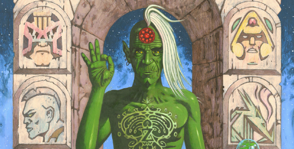

Posters and covers featuring characters from multiple stories.
Art by David Millgate
| Title | Parts | Pages | w indicates a wraparound coverCovers | Year(s) | Issues | Writer | Artist | Colourist | Letterer |
|---|---|---|---|---|---|---|---|---|---|
Featuring: ‑ free gift ‑ Tharg ‑ Dan Dare ‑ MACH 1 Free Space Spinner | ~ | ~ | 1 | 1977 | 1 | n/a | Kevin O'Neill | <-- | n/a |
Featuring: ‑ free gift ‑ Dan DareBiotronic Man | ~ | ~ | 1 | 1977 | 2 | n/a | Massimo Belardinelli | <-- | n/a |
Featuring: ‑ free gift ‑ FleshRed Alert / Flesh | ~ | ~ | 1 | 1977 | 3 | n/a | Ramon Sola | <-- | n/a |
Featuring: ‑ Tharg ‑ Dan Dare ‑ Flesh ‑ MACH 1 ‑ Judge Dredd ‑ Invasion ‑ Harlem HeroesI, Tharg, Bring You The Future! | ~ | ~ | 1 | 1977 | 13 | n/a | unknown, reprints | <-- | unknown |
| Starlord #1 | ~ | ~ | 1 | 1978 | SL1 | n/a | Ramon Sola | <-- | n/a |
| Experience Body-Shock Now! | ~ | ~ | 1 | 1978 | SL12 | n/a | Brian Lewis | <-- | n/a |
Featuring: ‑ Flesh ‑ Strontium Dog ‑ Judge Dredd ‑ Ro‑Busters2000AD and Star Lord | ~ | ~ | 1 | 1978 | 86 | n/a | Dave Gibbons | <-- | n/a |
Featuring: ‑ Strontium Dog ‑ Flesh ‑ Ro‑BustersGalaxy-Crunching Atom-Splitting Sci-Fi! | ~ | ~ | 1 | 1978 | 90 | n/a | reprints | <-- | n/a |
Featuring: ‑ Robo‑Hunter ‑ Judge Dredd ‑ Dan Dare100th Thrill-Powered Issue! | ~ | ~ | 1 | 1979 | 100 | n/a | reprints | <-- | n/a |
| Tornado #1 | ~ | ~ | 1 | 1979 | T1 | n/a | unknown | <-- | n/a |
| Tornado #2 | ~ | ~ | 1 | 1979 | T2 | n/a | unknown | <-- | n/a |
| Tornado #8 | ~ | ~ | 1 | 1979 | T8 | n/a | unknown | <-- | n/a |
| Tornado #9 | ~ | ~ | 1 | 1979 | T9 | n/a | unknown | <-- | n/a |
| Tornado Summer Special | ~ | ~ | 1 | 1979 | TSS | n/a | Graham Cotton | <-- | n/a |
Featuring: ‑ Moonraker ‑ Judge Dredd ‑ Dan DareMoonraker | ~ | ~ | 1 | 1979 | 119 | n/a | reprints, publicity photo | <-- | n/a |
Featuring: ‑ unknown ‑ Dan Dare ‑ ABC WarriorsWe're No.1 Across the Universe! | ~ | ~ | 1 | 1979 | 122 | n/a | reprints, Kevin O'Neill | <-- | n/a |
Featuring: ‑ Tharg ‑ The Big E ‑ Wolfie Smith ‑ Black HawkI, Tharg, Welcome the Tornado Heroes! | ~ | ~ | 1 | 1979 | 127 | n/a | Dave Gibbons | <-- | n/a |
Repeated on back cover. Featuring: ‑ Tharg the Mighty ‑ Judge Dredd ‑ InvasionIt's Wild... It's Sensational... It's Your Future! | ~ | ~ | 1 | 1979 | 2KA'80 | n/a | Gerry Woods | <-- | n/a |
Featuring: ‑ Tharg ‑ Walter the Wobot ‑ Ro‑Jaws ‑ Judge Dredd ‑ Hammerstein ‑ Mongrel ‑ Black Hawk ‑ Slippery Jim DiGriz ‑ The GronkSuper Cover Poster | ~ | ~ | 1w | 1979 | 144 | n/a | Brian Bolland | <-- | n/a |
Featuring: ‑ Fiends of the Eastern Front ‑ Robo‑Hunter ‑ Judge DreddRobots++Future-War++Monsters++Black Holes | ~ | ~ | 1 | 1980 | 152 | n/a | reprints | <-- | n/a |
Repeated on back cover. Featuring: ‑ Tharg the Mighty ‑ Judge Dredd ‑ Strontium Dog2000 AD Annual 1981 | ~ | ~ | 1 | 1980 | 2KA'81 | n/a | Dave Gibbons | <-- | n/a |
Featuring: ‑ Tharg ‑ Nick Fury ‑ Judge Dredd ‑ Jim DiGriz ‑ Wulf ‑ Johnny AlphaSplundig Vur Ho, Ho, Ho! | ~ | ~ | 1w | 1980 | 192 | n/a | Carlos Ezquerra | <-- | n/a |
| Tharg's Future Worlds | 6 | 6.5 | 1 | 1981 | 200-205 | n/a | Dave Gibbons | <-- | n/a |
Featuring: ‑ Tharg the Mighty ‑ Judge Dredd ‑ Strontium Dog ‑ Blackhawk2000 AD Annual 1982 | ~ | ~ | 1 | 1981 | 2KA'82 | n/a | Brian Bolland | <-- | n/a |
Featuring: ‑ Tharg the Mighty ‑ Rogue TrooperTotal War | ~ | ~ | 1 | 1982 | 260 | n/a | Robin Smith | <-- | n/a |
Featuring: ‑ Rogue Trooper ‑ Judge Dredd ‑ Strontium Dog2000 AD Annual 1983 | ~ | ~ | 1 | 1982 | 2KA'83 | n/a | Brian Bolland | <-- | n/a |
Featuring: ‑ Tharg ‑ Robo‑HunterRobo-World | ~ | ~ | 1 | 1982 | 283 | n/a | Robin Smith | <-- | n/a |
Featuring: ‑ Judge Dredd ‑ Robo‑HunterA Tale of Two Cities | ~ | ~ | 1 | 1982 | 294 | n/a | Carlos Ezquerra / Ian Gibson | <-- | n/a |
Featuring: ‑ Tharg ‑ Judge Dredd ‑ Sam Slade ‑ Rogue TrooperProg 300 | ~ | ~ | 1 | 1983 | 300 | n/a | reprints | <-- | n/a |
| A Galaxy of Prizes to be Won | ~ | ~ | 1 | 1983 | 320 | n/a | Robin Smith | <-- | n/a |
Featuring: ‑ Ro‑Busters ‑ Ace Trucking Co. ‑ Rogue Trooper ‑ Strontium Dog ‑ Robo‑Hunter ‑ Judge Dredd2000 AD Annual 1984 | ~ | ~ | 1 | 1983 | 2KA'84 | n/a | Dave Gibbons | <-- | n/a |
| Nemesis the Warlock / Strontium Dog | ~ | ~ | 1 | 1983 | 335 | n/a | Kevin O'Neill / Carlos Ezquerra | <-- | n/a |
Featuring: ‑ Slaine ‑ Rogue Trooper ‑ Judge Dredd2000 AD Annual 1985 | ~ | ~ | 1 | 1984 | 2KA'85 | n/a | Mike McMahon | <-- | n/a |
Featuring: ‑ Johnny Alpha & Wulf ‑ Judge AndersonZarjaz 8th Birthday Issue | ~ | ~ | 1 | 1985 | 416 | n/a | Carlos Ezquerra & Brett Ewins | <-- | n/a |
Featuring: ‑ Ace Trucking Co. ‑ Rogue Trooper ‑ Judge Dredd ‑ Strontium Dog2000 AD Annual 1986 | ~ | ~ | 1 | 1985 | 2KA'86 | n/a | Massimo Belardinelli | <-- | n/a |
| Dredd Dispenses Justice... | ~ | ~ | 1 | 1985 | 435 | n/a | Robin Smith | <-- | n/a |
Featuring: ‑ Dice Man ‑ Torquemada ‑ Rogue Trooper2000 AD's Dice Man No 3 | ~ | ~ | 1 | 1986 | DM3 | n/a | Glenn Fabry | <-- | n/a |
Featuring: ‑ Rogue Trooper ‑ Judge Dredd ‑ Strontium Dog2000 AD Annual 1987 | ~ | ~ | 1 | 1986 | 2KA'87 | n/a | Robin Smith | <-- | n/a |
Featuring: ‑ Slaine ‑ Halo Jones ‑ Rogue Trooper ‑ Fink Angel & Ratty ‑ Tharg + 2 droids ‑ DR & Quinch ‑ Judge Dredd ‑ Johnny Alpha ‑ Judge Hershey ‑ Torquemada ‑ Ro‑Jaws ‑ Dan Dare ‑ Hammerstein ‑ Judge Death ‑ Ace Garp(s) ‑ Judge Anderson ‑ Kano ‑ Micky Swift ‑ Bad City Blue ‑ Mean Machine Angel ‑ NemesisProg 500: 1977-1986 | ~ | ~ | 1w | 1986 | 500 | n/a | Slaine by Glenn Fabry Halo Jones by Ian Gibson Rogue Trooper by Cam Kennedy Fink Angel & Ratty by Mike McMahon Tharg by Eric Bradbury DR & Quinch by Alan Davis Judge Dredd by John Higgins Johnny Alpha by Carlos Ezquerra Judge Hershey by Brian Bolland Torquemada & Ro‑Jaws by Kevin O'Neill Dan Dare by Dave Gibbons Hammerstein by Steve Dillon Judge Death by Cliff Robinson Ace Garp(s) by Massimo Belardinelli Judge Anderson by Barry Kitson Kano by Brett Ewins Micky Swift by Milligan & McCarthy Bad City Blue by Robin Smith Mean Machine Angel by Ron Smith Nemesis by Bryan Talbot various | <-- | n/a |
| Ten Zarjaz Years | ~ | ~ | 1w | 1987 | 520 | n/a | John Higgins | <-- | n/a |
| The Future is Now! | ~ | ~ | 1 | 1987 | SFS10 | n/a | Garry Leach | <-- | n/a |
Featuring: ‑ Anderson Psi‑Division ‑ Tharg the Mighty ‑ Strontium Dog2000 AD Annual 1988 | ~ | ~ | 1 | 1987 | 2KA'88 | n/a | Brendan McCarthy | <-- | n/a |
| Pure Genius! | ~ | ~ | 1 | 1988 | 579 | n/a | Steve Dillon | <-- | n/a |
Featuring: ‑ Bad Company (Kano) ‑ Tharg the Mighty ‑ Judge Dredd2000 AD Annual 1989 | ~ | ~ | 1 | 1988 | 2KA'89 | n/a | Brett Ewins & Jim McCarthy | <-- | n/a |
Featuring: ‑ Zenith ‑ Judge Dredd ‑ Judge Anderson ‑ Rogue Trooper ‑ Johnny AlphaWinter Special [#1] | ~ | ~ | 1 | 1988 | WS1 | n/a | John Higgins | <-- | n/a |
Featuring: ‑ Tharg ‑ Tanner ‑ John Probe12th Anniversary Square-Off | 1 | 1 | 0 | 1989 | 615 | n/a | Kev Hopgood | <-- | n/a |
| Life's A Beach | ~ | ~ | 1 | 1989 | SFS12 | n/a | Richard Dolan | <-- | n/a |
| [Character Montage Quiz] | 1 | 2 | 0 | 1989 | SFS12 | editorial | reprints | [b&w] | n/a |
| Tharg's Masterworks: Opus 1 - Rhapsody in Blue | 1 | 1 | 0 | 1989 | 630 | n/a | Ron Smith | <-- | n/a |
| ZAR...JAZ | ~ | ~ | 1 | 1989 | 633 | n/a | Cliff Robinson | <-- | n/a |
Featuring: ‑ Tharg ‑ Johnny Alpha ‑ Judge Dredd ‑ Rogue TrooperCode Warning | 1 | 1 | 0 | 1989 | 633 | n/a | Cliff Robinson | <-- | n/a |
Featuring: ‑ Tharg the Mighty ‑ Judge Dredd ‑ Zenith ‑ Moonrunners2000 AD Annual 1990 | ~ | ~ | 1 | 1989 | 2KA'90 | n/a | Cliff Robinson | <-- | n/a |
Featuring: ‑ Nemesis the Warlock ‑ Torquemada ‑ Judge Dredd ‑ Johnny Alpha ‑ HammersteinContents | 1 | 1 | 0 | 1989 | 2KA'90 | n/a | Richard Dolan | <-- | n/a |
Featuring: ‑ Rogue Trooper ‑ Tyranny Rex ‑ Judge DreddWinter Special [#2]: It's War! | ~ | ~ | 1 | 1989 | WS2 | n/a | Sean Phillips | <-- | n/a |
| Armoured Gideon / Luke Kirby / Bix Barton | ~ | ~ | 1 | 1990 | SFS13 | n/a | Zac Sandler | <-- | n/a |
Featuring: ‑ Tharg the Mighty ‑ Judge Dredd ‑ Night Zero ‑ Moonrunners ‑ Strontium Dog2000 AD Annual 1991 | ~ | ~ | 1 | 1990 | 2KA'91 | n/a | Brett Ewins | <-- | n/a |
Featuring: ‑ Judge Dredd ‑ Judge Anderson ‑ Judge Death ‑ ChopperMega-Action! Mega-Death! Mega-Dredd! | ~ | ~ | 1 | 1990 | M1.02 | n/a | Sean Phillips | <-- | n/a |
| 5 New Stories | ~ | ~ | 1 | 1990 | 700 | n/a | Sean Phillips | <-- | n/a |
Featuring: ‑ Tharg the Mighty (& droids) ‑ Judge Dredd ‑ Bradley ‑ Bix Barton (& Cane)Winter Special [#3]: Lafforama | ~ | ~ | 1 | 1990 | WS3 | n/a | Simon Bisley | <-- | n/a |
| Alien Presents! | ~ | ~ | 1 | 1990 | 710 | n/a | Colin MacNeil | <-- | n/a |
| 14 Zarjaz Years | ~ | ~ | 1 | 1991 | 719 | n/a | Zac Sandler | <-- | n/a |
| Free Gifts! New Stories! All Colour! | ~ | ~ | 1 | 1991 | 723 | n/a | reprints | <-- | n/a |
Gatefold cover. Inside cover pencils. Featuring: ‑ Rogue Trooper ‑ Judge Dredd ‑ Tharg ‑ Sam Slade ‑ Tao do Moto ‑ Slaine ‑ Feral ‑ Tyranny Rex2000 AD Yearbook 1992 | ~ | 4 | 1w | 1991 | 2KYB'92 | n/a | Sean Phillips | <-- | n/a |
| From Tharg to All Earthlets... | ~ | ~ | 1 | 1992 | 772 | n/a | unknown | <-- | n/a |
Featuring: ‑ Kelly's Eye ‑ The Spider ‑ Mytek the Mighty2000 AD Action Special | ~ | ~ | 1 | 1992 | 2KAS | n/a | Brendan McCarthy | <-- | n/a |
Featuring: ‑ Mytek the Mighty ‑ The Spider ‑ Kelly's Eye ‑ Steel Claw ‑ Cursitor Doom ‑ Doctor SinContents | ~ | 1 | 0 | 1992 | 2KAS | n/a | unknown | <-- | n/a |
| Multi-Character [3] | 2 | ~ | 0 | 1992 | M2.02-M2.03 | n/a | Sean Phillips, Shaky Kane | <-- | n/a |
Gatefold cover. Featuring: ‑ Tharg ‑ Walter the Wobot And sculptures of: ‑ Judge Dredd ‑ Anderson ‑ Brigand Doom ‑ Rogue Trooper ‑ Sam Slade ‑ Slaine ‑ Durham Red2000 AD Yearbook 1993: But is it Art? | ~ | 4 | 1w | 1992 | 2KYB'93 | n/a | Dermot Power | <-- | n/a |
Gatefold cover. Featuring: ‑ Judge Dredd ‑ Armitage ‑ Brit‑Cit JudgesJudge Dredd Yearbook 1993 | ~ | 4 | 1w | 1992 | JDYB'93 | n/a | Brendan McCarthy | <-- | n/a |
Subtitled: "Chilling Tales for Cold Winter Nights". Featuring: ‑ Judge Dredd ‑ Nemesis ‑ DeadlockWinter Special [#4] | ~ | ~ | 1 | 1992 | WS4 | n/a | Kevin Walker | <-- | n/a |
Featuring: ‑ Judge Dredd ‑ Slaine ‑ The Blitzspear ‑ Johnny Alpha ‑ Ro‑Jaws ‑ Hammerstein ‑ Sam Slade ‑ Halo Jones ‑ Judge Anderson ‑ NemesisThe Best of 2000 AD Special Edition #1 | ~ | ~ | 1w | 1993 | B2KSE1 | n/a | Ian Gibson Mike McMahon Kevin O'Neill various | Gina Hart | n/a |
| Bad Company / Firekind / Armoured Gideon... | ~ | ~ | 1 | 1993 | 828 | n/a | reprints / preprints | <-- | n/a |
Featuring: ‑ Maniac 5 ‑ Brigand Doom ‑ Tyranny Rex ‑ Judge Dredd ‑ Fr1dayEven Bigger Guns!!! | ~ | ~ | 1 | 1993 | SFS16 | n/a | Dermot Power | <-- | n/a |
Gatefold cover. Featuring: ‑ Tharg ‑ Rogue Trooper ‑ Ro‑Jaws ‑ Judge Dredd ‑ Luke Kirby ‑ Tyranny Rex ‑ DR & Quinch ‑ The Clown ‑ Hammerstein ‑ Sam Slade2000 AD Yearbook 1994: Spaced Out! | ~ | 4 | 1w | 1993 | 2KYB'94 | n/a | Mick Austin | <-- | n/a |
Gatefold cover. Featuring: ‑ Judge Dredd ‑ Mean Machine ‑ Hershey ‑ Armitage ‑ Devlin WaughJudge Dredd Yearbook 1994 | ~ | 2 | 1w | 1993 | JDYB'94 | n/a | Mark Wilkinson | <-- | n/a |
| Look to the Future | ~ | ~ | 1 | 1993 | 852 | n/a | Sean Phillips | <-- | n/a |
Featuring: ‑ Tharg the Mighty ‑ Tracer ‑ Judge Dredd ‑ Maniac 5 ‑ Psi‑Judge Janus ‑ Maniac 6 ‑ Brigand Doom ‑ Tao de MotoWinter Special [#5]: Thrill-Power vs Chill-Power | ~ | ~ | 1w | 1993 | WS5 | n/a | David Hine | <-- | n/a |
Featuring: ‑ Judge Dredd ‑ Slaine ‑ The Blitzspear ‑ Johnny Alpha ‑ Ro‑Jaws ‑ Hammerstein ‑ Sam Slade ‑ Halo Jones ‑ Judge Anderson ‑ NemesisThe Best of 2000 AD Special Edition #2 | ~ | ~ | 1w | 1994 | B2KSE2 | n/a | Colin MacNeil | <-- | n/a |
| All-New Strips! | ~ | ~ | 1 | 1994 | 873 | n/a | reprints / preprints | <-- | n/a |
| The Galaxy's First Action Hero! | ~ | ~ | 1 | 1994 | 874 | n/a | Ron Smith | <-- | n/a |
Featuring: ‑ Robo‑Hunter ‑ Judge Dredd ‑ Rogue Trooper [F]Hot, Cocked and Ready To Rock! | ~ | ~ | 1 | 1994 | SFS17 | n/a | Henry Flint | <-- | n/a |
| [Character Montage] | 1 | 1 | 0 | 1994 | SFS17 | n/a | Mark Harrison | <-- | n/a |
Featuring: ‑ [Culling Crew] ‑ Judge Dredd ‑ Melvin Milehigh ‑ [Sumos & Sporrans] ‑ Pandora ‑ The Undertaker ‑ Karyn, Psi[Character Montage] | 1 | 1 | 0 | 1994 | JDMS7 | n/a | Simon Davis | <-- | n/a |
Gatefold cover. Featuring: ‑ Tharg ‑ Judge Dredd ‑ Sam Slade ‑ Fr1day ‑ Brigand Doom ‑ Babe Race 20002000 AD Yearbook [1995] | ~ | 4 | 1w | 1994 | 2KYB'95 | n/a | Mick Austin | <-- | n/a |
Gatefold cover. Featuring: ‑ Mean Machine ‑ Judge Dredd ‑ Judge Death ‑ Hershey ‑ Preacher CainJudge Dredd Yearbook [1995] | ~ | 2 | 1w | 1994 | JDYB'95 | n/a | Sean Phillips | <-- | n/a |
Featuring: ‑ ABC Warriors ‑ Sam Slade ‑ Big Dave ‑ Judge Dredd ‑ Harry ExtonAmazing Banned Confessions Warriors | ~ | ~ | 1 | 1994 | 904 | n/a | Dermot Power | <-- | n/a |
| Femmes Fatale Supplement | ~ | ~ | 1 | 1994 | M2.64-S | n/a | various previews of inside art | <-- | n/a |
Featuring: ‑ Durham Red ‑ Brigand Doom ‑ Judge Dredd ‑ Tharg the MightyWinter Special [#6]: Boo! | ~ | ~ | 1 | 1994 | WS6 | n/a | Paul Johnson | <-- | n/a |
| X-Mas Tinsel-Power! | ~ | ~ | 1 | 1994 | 920 | n/a | Jason Brashill | <-- | n/a |
| 18 Zarjaz Years and Still Boldly Going | ~ | ~ | 1 | 1995 | 928 | n/a | Dermot Power | <-- | n/a |
Featuring: ‑ Tharg the Mighty ‑ Robo‑Hunter ‑ Judge Dredd ‑ Rogue Trooper [F]Cosmic Contents | ~ | 1 | 0 | 1995 | SFS18 | n/a | Rian Hughes | <-- | n/a |
| You've Seen The Film... | ~ | ~ | 1 | 1995 | M3.02 | n/a | various previews of inside art | <-- | n/a |
| Armitage, Shimura, Mean Machine & Judge Dredd | 1 | 2 | 0 | 1995 | M3.03 | n/a | Jason Brashill | <-- | n/a |
| Girls On Top | ~ | ~ | 1 | 1995 | M3.09 | n/a | Jason Brashill | <-- | n/a |
| A New Wave of Thrill-Power! | ~ | ~ | 1w | 1995 | 964 | n/a | John Higgins | <-- | n/a |
| Multi-Character [8] | 2 | 2 | 0 | 1995-1196 | 972-973 | n/a | Mick Austin | <-- | n/a |
| New Thrills! | ~ | ~ | 1 | 1996 | 980 | n/a | Sean Phillips | <-- | n/a |
Featuring: ‑ Rogue Trooper ‑ Rogue Trooper [F] ‑ Venus BluegenesFuture War | ~ | ~ | 1w | 1996 | RTAS | n/a | Dave Gibbons | <-- | n/a |
| Four New Thrillers! | ~ | ~ | 1gf | 1997 | M3.34 | n/a | Siku | <-- | n/a |
Linked to: Vector 13 Sinister Dexter JFK | ~ | ~ | 1 | 1997 | 1070 | n/a | Steve Sampson | <-- | n/a |
| The Biggest and Best Prog Ever! | ~ | ~ | 1 | 1999 | p2000 | n/a | Brian Bolland | <-- | n/a |
| New Look! New Stories! All Action! | ~ | ~ | 1 | 2000 | M3.64 | n/a | Trevor Hairsine | <-- | n/a |
Featuring: ‑ Judge Dredd ‑ Slaine ‑ The Blitzspear ‑ Johnny Alpha ‑ Ro‑Jaws ‑ Hammerstein ‑ Sam Slade ‑ Halo Jones ‑ Judge Anderson ‑ NemesisThe Best of 2000 AD Special Edition #4 | ~ | ~ | 1 | 2000 | B2KSE4 | n/a | Mark Harrison | <-- | n/a |
| The Good, The Bad & The Damn Ugly! | ~ | ~ | 1 | 2000 | M3.69 | n/a | Kevin Walker | <-- | n/a |
| Gun For Hire! / Judge This! / Demon Killer! | 3 | ~ | 3 | 2000 | M3.71-M3.73 | n/a | Cliff Robinson | <-- | n/a |
Featuring: ‑ Judge Dredd ‑ The Mean Machine ‑ Harke & BurrButtin' Man! | ~ | ~ | 1 | 2001 | Reprints: Also on back coverM3.74 | n/a | Colin MacNeil | <-- | n/a |
| No.1 With a Bullet! | ~ | ~ | 1 | 2001 | M4.01 | n/a | Colin Wilson + inside art previews | Janet Gale | n/a |
| "25 Years, Creep!" | ~ | ~ | 1 | 2002 | 1280 | n/a | Kevin Walker | <-- | n/a |
| All New Thrills Start Inside! | ~ | ~ | 1 | 2002 | 1300 | n/a | Trevor Hairsine | <-- | n/a |
| "...Is That A Daystick In Your Hand..?" | ~ | ~ | 1 | 2002 | M201 | n/a | Cliff Robinson | Chris Blythe | n/a |
| Tomorrow's Hyper-Heroes Today! | ~ | ~ | 1 | 2003 | 1350 | n/a | Henry Flint | Chris Blythe | n/a |
| The Power Behind the Thrills! | ~ | ~ | 1 | 2003 | 1362 | n/a | Andy Clarke | Chris Blythe | n/a |
| Judge Dredd Megazine | ~ | ~ | 1 | 2003 | M214 | n/a | Greg Staples / Ark VFX | <-- | n/a |
| Thrill-Power from Both Barrels | ~ | ~ | 1 | 2004 | 1387 | n/a | Dave Gibbons | Len O'Grady | n/a |
| The Future is Now | ~ | ~ | 1w | 2004 | 1400 | n/a | Clint Langley | <-- | n/a |
| More Strip Pages Than Ever Before | ~ | ~ | 1 | 2004 | M224 | n/a | Colin MacNeil | <-- | n/a |
| Ladies Who Punch! | ~ | ~ | 1 | 2004 | M225 | n/a | Cliff Robinson | <-- | n/a |
| Prog 2005 | ~ | ~ | 1 | 2004 | p2005 | n/a | Mark Harrison | <-- | n/a |
| In Thrills We Trust | ~ | ~ | 1w | 2005 | p2006 | n/a | Kevin Walker | <-- | n/a |
| 1500 | ~ | ~ | 1 | 2006 | 1500 | n/a | Boo Cook | <-- | n/a |
| Energizing the Galaxy... | ~ | ~ | 1 | 2006 | p2007 | n/a | Simon Davis | <-- | n/a |
| "Ho Ho Drokkin' Ho, Creeps!" | ~ | ~ | 1 | 2006 | M253 | n/a | Cliff Robinson | <-- | n/a |
| Cosmic! | ~ | ~ | 1 | 2007 | P2008 | n/a | Clint Langley | <-- | n/a |
| Forces of Law & Disorder | ~ | ~ | 1 | 2007 | M266 | n/a | Cliff Robinson | <-- | n/a |
| Take A Thrill-Powered Ride! | ~ | ~ | 1 | 2008 | 1576 | n/a | Cliff Robinson | <-- | n/a |
| "Zarjaz!" | ~ | ~ | 1 | 2008 | 1587 | n/a | Cliff Robinson | <-- | n/a |
| Super-Charging Your Reality... | ~ | ~ | 1 | 2008 | p2009 | n/a | Carlos Ezquerra | <-- | n/a |
| "Your Move, Earthlets." | ~ | ~ | 1 | 2009 | p2010 | n/a | Greg Staples | <-- | n/a |
| Multi-Character [7] | 1 | 2 | 0 | 2010 | p2011 | n/a | Ben Willsher | <-- | n/a |
| United in Thrill-Power! | ~ | ~ | 1 | 2011 | p2012 | n/a | Greg Staples | <-- | n/a |
| 35 Zarjaz Years [cover #1 of 2] | ~ | ~ | 1 | 2012 | 1771 | n/a | Chris Weston | <-- | n/a |
Featuring: ‑ Judge Dredd ‑ Ichabod Azrael ‑ Zombo2000 AD Free Comic Book Day #2 | ~ | ~ | 1 | 2012 | FCBD2 | n/a | Jock | <-- | n/a |
| Law Zone! | ~ | ~ | 1 | 2012 | 1800 | n/a | Simon Bisley | <-- | n/a |
| "Wot Yer Waitin' For, Humes?" | 1 | 1 | 0 | 2012 | 1800 | n/a | Chris Weston | <-- | n/a |
| 2000 AD Free Comic Book Day #3 | ~ | ~ | 1 | 2013 | FCBD3 | n/a | Henry Flint | <-- | n/a |
| Mindblowing! | ~ | ~ | 1 | 2013 | 1850 | n/a | Ben Willsher | <-- | n/a |
| Ultimate Thrill-Power! | ~ | ~ | 1 | 2013 | p2014 | n/a | Ben Willsher | <-- | n/a |
| 2000 AD | ~ | ~ | 1 | 2014 | 1874 | n/a | Edmund Bagwell | <-- | n/a |
| Faces of the Future | ~ | ~ | 1 | 2014 | SFS20 | n/a | James Biggie | <-- | n/a |
| 350th | ~ | ~ | 1 | 2014 | M350 | n/a | Brian Bolland | <-- | n/a |
Featuring: ‑ Tharg ‑ Judge Dredd ‑ Rogue Trooper [all as zombies]Winter Special [#9]: Take a Chill-Thrill! | ~ | ~ | 1 | 2014 | WS9 | n/a | Ben Templesmith | <-- | n/a |
Featuring (as zombies): ‑ Tharg the Mighty ‑ Hammerstein ‑ Slaine ‑ Johnny Alpha ‑ Judge Anderson ‑ Judge Dredd ‑ Rogue TrooperBrraaaiiiinn Food Every Wednesday | 1 | 1 | 0 | 2014 | WS9 | n/a | Nick Percival | <-- | n/a |
| New Stories Start Inside | ~ | ~ | 1 | 2015 | 1924 | n/a | Brian Bolland | <-- | n/a |
Featuring: ‑ Judge Dredd ‑ Tharg the Mighty ‑ Rogue Trooper2000 AD Free Comic Book Day #5 | ~ | ~ | 1 | 2015 | FCBD5 | n/a | Henry Flint | <-- | n/a |
| The Fine Art of Thrill-Creation | ~ | ~ | 1 | 2015 | 1932 | n/a | Alex Ronald | <-- | n/a |
| Hyper-Heroes For The Movies In Your Mind! | ~ | ~ | 1 | 2015 | SFS21 | n/a | Greg Staples | <-- | n/a |
Featuring (as zombies): ‑ Johnny Alpha ‑ Judge Anderson ‑ Judge Dredd ‑ Rogue Trooper ‑ Zombo ‑ Durham RedComics | ~ | ~ | 1 | 2016 | FCBD6 | n/a | Mike Allred | <-- | n/a |
| 2000th Zarjaz Issue! | ~ | ~ | 1w | 2016 | 2000 | n/a | Cliff Robinson | Dylan Teague | n/a |
| 1977-2016: 2000 Zarjaz Progs | 1 | 2 | 0 | 2016 | 2000 | n/a | Cliff Robinson | Dylan Teague | n/a |
| ...Highly Explosive Thrill-Zone | ~ | ~ | 1 | 2016 | 2011 | n/a | Cliff Robinson | Dylan Teague | n/a |
Featuring: ‑ Tharg ‑ Johnny Alpha ‑ Judge Dredd40th Anniversary Special | ~ | ~ | 1 | 2017 | 2K40 | n/a | Carlos Ezquerra | <-- | n/a |
Featuring: ‑ M.A.C.H.1 ‑ John Probe ‑ The Visible Man ‑ Frank ‑ Flesh ‑ Old One‑Eye ‑ Harlem Heroes ‑ Slim ‑ Invasion ‑ Bill Savage[Jubilee], part 2 | 1 | 1 | 0 | 2017 | 2K40 | T.M.O. | Rufus Dayglo | <-- | Simon Bowland |
Featuring: ‑ Judge Dredd ‑ Zombo ‑ Ro‑Jaws ‑ Durham Red ‑ Slaine ‑ Nikolai Dante2000 AD 40th Anniversary Primer | ~ | ~ | 1 | 2017 | 2K40-S | n/a | reprints | <-- | n/a |
| 40 Years of Thrill-Power | ~ | ~ | 1 | 2017 | FCBD7 | n/a | Mike Perkins | <-- | n/a |
| Scream & Misty [Ghastly McNasty & Misty] | ~ | ~ | 1 | 2017 | S&M 1 | n/a | Henry Flint | <-- | n/a |
| Leading the Thrill-Charge | ~ | ~ | 1 | 2017 | 2061 | n/a | Staz Johnson | Chris Blythe | n/a |
| Future Visions! | ~ | ~ | 1 | 2018 | 2073 | n/a | Greg Staples | <-- | n/a |
| 2000 AD Regened | ~ | ~ | 1 | 2018 | FCBD8R | n/a | Nuno Plati | <-- | n/a |
Featuring: ‑ Judge Dredd ‑ Anderson Psi Division2000 AD Sci-Fi Special | ~ | ~ | 1 | 2018 | SFS23 | n/a | Tula Lotay | <-- | n/a |
| Scream & Misty [Ghastly McNasty & Misty] | ~ | ~ | 1 | 2018 | S&M 2 | n/a | Kyle Hotz | <-- | n/a |
| Welcome to the Thrill-Party! | ~ | ~ | 1 | 2018 | 2111 | n/a | John Higgins | <-- | n/a |
| 2000 AD Villains Takeover Special | ~ | ~ | 1 | 2019 | 2KVS | n/a | Greg Staples | <-- | n/a |
| For Carlos | 1 | 1 | 0 | 2019 | 2KVS | n/a | Chris Weston | [b&w] | n/a |
| 2000 AD Regened | ~ | ~ | 1 | 2019 | 2130R | n/a | Neil Googe | Gary Caldwell | n/a |
| You Want Thrills, Earthlets? | ~ | ~ | 1 | 2019 | 2150 | n/a | Joseph Michael Linsner | <-- | n/a |
| The Thrill of it All | ~ | ~ | 1 | 2019 | 2159 | n/a | Rob Davis | <-- | n/a |
| A Tribute to Carlos Ezquerra | ~ | ~ | 1 | 2019 | SFS24 | n/a | Mick McMahon | <-- | n/a |
| The Spirit of the Season | ~ | ~ | 1 | 2019 | M415 | n/a | Staz Johnson & Matt Soffe | <-- | n/a |
| Two Decades in the Rebellion | 1 | 2 | 0 | 2020 | SFS25 | n/a | Stewart K. Moore | <-- | n/a |
Covid delayed.Best of 2000 AD Issue 0 - FCBD | ~ | ~ | 1 | 2020 | FCBD9 | n/a | Glenn Fabry | Adam Brown | n/a |
| In The Year 2020... | 1 | 2 | 0 | 2020 | 2212 | n/a | Stewart K. Moore | <-- | n/a |
Featuring: ‑ Judge Dredd ‑ Anderson Psi Division ‑ Chopper ‑ Devlin Waugh ‑ Aiko Inaba ‑ ArmitageGlobal Justice! | ~ | ~ | 1 | 2021 | SFS26 | n/a | Neil Roberts | <-- | n/a |
Featuring: ‑ Tharg the Mighty ‑ Judge Dredd ‑ Rogue Trooper ‑ Anderson Psi Division ‑ Strontium Dog ‑ Nemesis the Warlock ‑ Hammerstein2000 AD Star Scan | 1 | 1 | 0 | 2021 | 2250 | n/a | David Millgate | <-- | n/a |
Featuring: ‑ Judge Dredd ‑ Anderson Psi Division ‑ Judge DeathComic Rock | ~ | ~ | 1 | 2022 | SFS27 | n/a | Luke Preece | <-- | n/a |
| year | episodes | pages |
| 1979 | 0 | 0 |
| 1980 | 0 | 0 |
| 1981 | 6 | 6.5 |
| 1982 | 0 | 0 |
| 1983 | 0 | 0 |
| 1984 | 0 | 0 |
| 1985 | 0 | 0 |
| 1986 | 0 | 0 |
| 1987 | 0 | 0 |
| 1988 | 0 | 0 |
| 1989 | 5 | 6 |
| 1990 | 0 | 0 |
| 1991 | 0 | 4 |
| 1992 | 2 | 9 |
| 1993 | 0 | 6 |
| 1994 | 2 | 8 |
| 1995 | 3 | 5 |
| 1996 | 0 | 0 |
| 1997 | 0 | 0 |
| 1998 | 0 | 0 |
| 1999 | 0 | 0 |
| 2000 | 3 | 0 |
| 2001 | 0 | 0 |
| 2002 | 0 | 0 |
| 2003 | 0 | 0 |
| 2004 | 0 | 0 |
| 2005 | 0 | 0 |
| 2006 | 0 | 0 |
| 2007 | 0 | 0 |
| 2008 | 0 | 0 |
| 2009 | 0 | 0 |
| 2010 | 1 | 2 |
| 2011 | 0 | 0 |
| 2012 | 1 | 1 |
| 2013 | 0 | 0 |
| 2014 | 1 | 1 |
| 2015 | 0 | 0 |
| 2016 | 1 | 2 |
| 2017 | 1 | 1 |
| 2018 | 0 | 0 |
| 2019 | 1 | 1 |
| 2020 | 2 | 4 |
| 2021 | 1 | 1 |
| 2022 | 0 | 0 |
Chart excludes covers: